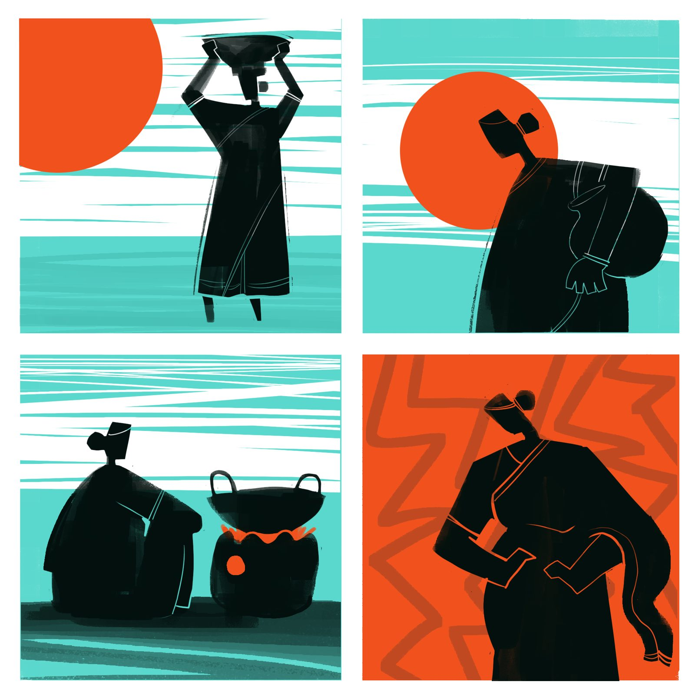
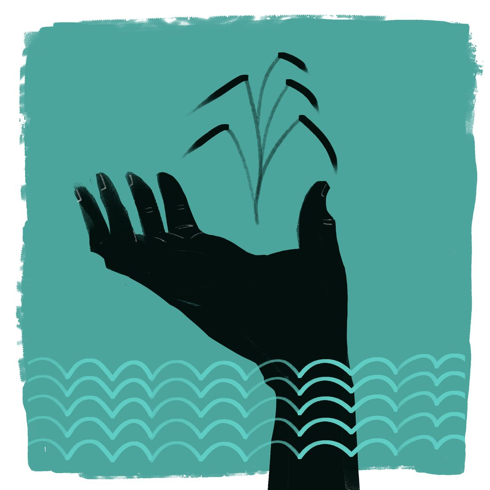
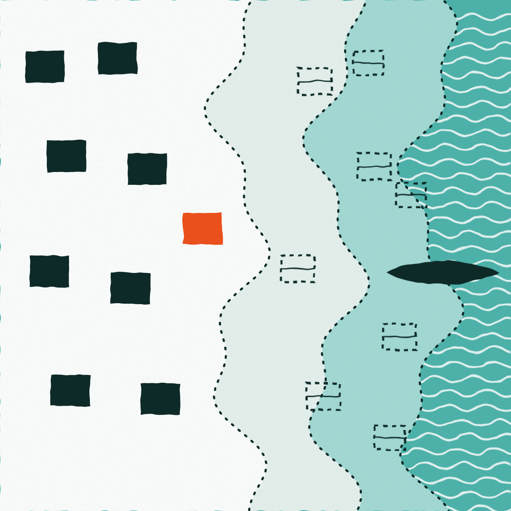
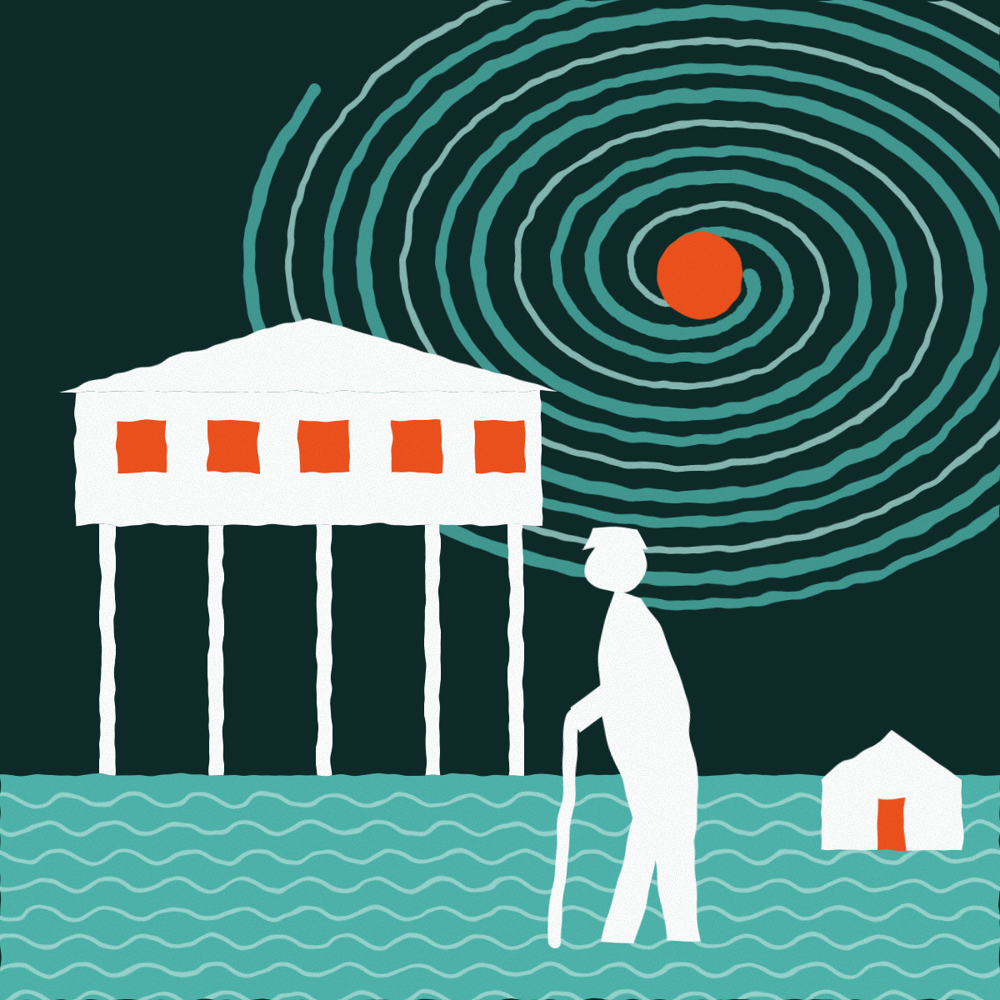

Coastal Voices
Stories
Reporting on climate change from the coast of Bangladesh.

Vanishing World of the River Gypsies: How “Manta” Community Is Surviving Climate Change
On a bone-chilling winter morning, 50-year-old Jashim Uddin sat on the deck of his small wooden boat, gazing at the distant…

Water Crisis Hits Teknaf Farmers as Hill Streams Dry Up
On the early winter morning of 23 December, Nadir Hossain and his wife Sakina Begum stood in their small plot of land, watering…

Sandcastles in Danger: Children’s Perspectives on a Changing Coast
"This used to be our playground," says 12-year-old Shihab, pointing to a patch of water in Shyamnagar Upazila, Satkhira, where…

Restoring Sand Dunes to Prevent Coastal Erosion
Abdullah, a local fisherman in Cox’s Bazar, was standing on the edge of the sea and unfolded his lifelong battle with the waves…

How Sumi Howlader of Bagerhat Is Bringing Life Back to Farmland
Climate change is hitting Bangladesh's farms hard. In coastal Bagerhat, worm compost is changing the fortunes of women…

Shrimp Farmers Hit by Climate Change Find Hope in the Cluster Method
After years of floods, disease and losses, farmers in Bagerhat are earning more from shrimp by farming together in clusters.
The Story of Fisherman Sunil Sarkar
When the Kapotaksha and Shalika rivers silted up, Sunil Sarkar took ten fishing families 105 kilometers to the edge of the…

Women Burning in Salt and Heat
Women in coastal Satkhira face salinity, water scarcity and extreme heat every day, from Jasmin Akter's open stove to Jobeda…

Cattle Are Disappearing from the Satkhira Coast
Buri Goalini was named for its cows and milk. Cyclones, salinity and shrimp enclosures have left many sheds empty.

Rural Nutrition at Risk: The Habitats of Wild Edible Plants Are Under Threat
Uncultivated greens feed and heal rural families in Shyamnagar, Satkhira. Salinity, chemicals and neglect are making them vanish.
Dacope's Only Hospital Treated 31,164 Diarrhoea Patients in Seven Years
A study of hospital records in Khulna's Dacope links salty, unsafe water to diarrhoea, arsenic poisoning and lung disease.

Moved 15 Times: Life on the Eroding Bank of the Meghna
In Bhola's Kalikanagar, families have moved up to 15 times as the river took their land. Now 86.5% live on under 10,000 taka a…

Why 61 Elderly Islanders in Bhola Stayed Home During Cyclone Bulbul
A survey of 200 people aged 60 and above found 30.5% did not go to a cyclone shelter when Bulbul approached.

Climate Hardship Pulled 58 Girls Out of School and Into Marriage
A village study in Gaibandha, Barguna and Satkhira found girls married between 12 and 17 after cyclones, floods and erosion.

The Longer Walk for Water: Salt, Drought and Women's Days
In a survey across three regions, 64.5% reported less drinking water. In Satkhira the figure was 80%.

Barguna's District Hospital Has 100 Beds. Fifty Work.
After Cyclone Sidr killed 1,335 people in Barguna, a study counted the doctors, nurses and beds that remain.
Two of Every Three Patients at Four Coastal Clinics Were Women
Registers from community clinics in Dacope and Shyamnagar show 42,905 visits in two years. Women made 67.1% of them.

At Mongla the Wind Reached 38 Knots. at Khepupara, 65.
Wind records from cyclones between 1988 and 2019 show lower speeds behind the Sundarbans. Forty coastal residents add their views.
No stories match this filter.